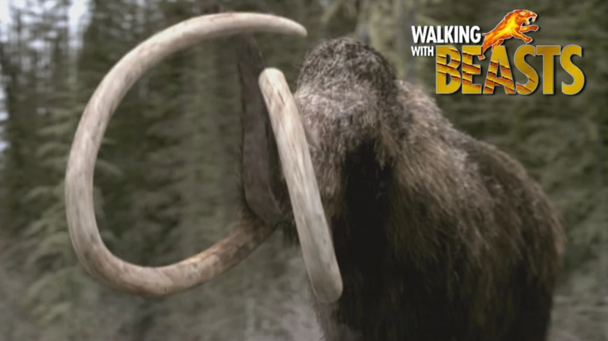

Pleistoceno en otros medios
La mayoria de la gente conoce este periodo por la saga de peliculas de la era de hielo de blue sky (actualmente propiedad de disney). Sin embargo, este no es el unico medio para verlo. Este periodo tambien fue objetivo de muchos canales televisos y documentales. Ya sean estos del mismo periodo o uno de los animales del mismo. Aqui tienen variosdocumentales que pueden encontrar en internet.
Camimando entre las Bestias (Walking with Beasts, 2001)
Lanzado en el 2001, producido por la BBC y al igual que su predecesora, es un grandioso documental, siento este "Caminando entre las Bestias“. En un capitulo se ve por completo el periodo pleistocénico, específicamente el ultimo de la serie. En este nos remontamos 30,000 años al pasado y durante el episodio acompañamos a un rebaño de mamuts lanudos en su migración. Durante su viaje deberán enfrentarse a los depredadores.

Caminando entre las Bestias (BBC, 2001)
Viaje a la Prehistoria (Prehistoric America, 2002)
En 2002, la BBC lanza otra serie documental de 6 episodios (cada uno de 48 minutos de duración), llamado “Viaje a la Prehistoria”. Retrocedemos en el tiempo a finales de la era de hielo hace unos 14,000 años.

Viaje a la Prehistoria (BBC, 2002)
Parque Prehistorico (Prehistoric Park, 2006)
Para 2006, se lanzo la increible serie de parque prehistorico. En donde el aventurero y naturalista Nigel Marven viaja a diferentes epocas del pasado para salvar a animales de la extinción trayendolas al presente. Desde insectos gigantes, mamiferos exoticos, hasta dinosaurios. Con animales del pleistoceno fueron en los capitulos 2 y 4. En estos nigel va por una mamut lanudo que perdio a su hermana y hace todo para salvarla. Y con los smilodones va a sudamerica para salvar a una hembra que pierde a 2 cachorros suyos y un macho que los esta siguiendo.

Parque Prehistorico (BBC, 2006)
Depredadores Prehistoricos (Prehistoric Predators, 2007)
Depredadores Prehistóricos. Un programa de 2007 de national geographic basado de depredadores del cenozoico. La serie investigo como cazaban y luchaban estas bestias, y que los llevo a la extinción. Con los depredadores, están 3. El Smilodon o dientes de sable, el lobo terrible y el arctodus simus (oso de cara corta).

Depredadores Prehistoricos(National Geographic, 2007)
Mamut Lanudo: Secretos del Hielo (Woolly Mammoth: Secrets of the Ice, 2012)
5 años después en 2012, la BBC lanza un documental film, llamado Mamut lanudo secretos del hielo. Narrado por la experta Alice Roberts, explica como actuó y como eran los mamíferos mas icónicos de la edad de hielo, El mamut lanudo. Los mamuts han paralizado a los humanos desde las profundidades de la edad de hielo, cuando sus rebaños vagaban por lo que ahora es Europa y Asia. Aunque estos curiosos miembros de la familia de los elefantes, se han extinguido durante miles de años. Los científicos pueden pintar una imagen increíblemente detallada de sus vidas gracias a los cadáveres que se han conservado en el permafrost siberiano.

Mamut Lanudo: Secretos del Hielo (BBC, 2012)
Titanes de la era de Hielo (Titans of the Ice Age, 2013)
En 2013, se lanzo este documental film llamado Titanes de la era de hielo. Nos remonta a los paisajes helados de América del norte, Europa y Asia, hace aproximadamente 10,000 años. Vemos a los hermosos y peligrosos reinos de estos titanes del hielo y con tecnología e imágenes generadas por computadora, recrean estas majestuosas bestias.

Titanes de la Era de Hielo (Universal Studios & Giant Screen Film, 2013)
Gigantes de la era de Hielo (Ice Age Giants, 2013)
En ese mismo año (2013), la BBC lanzo otra serie de minidocumentales de 3 capítulos, siendo este Gigantes de la Era de Hielo. La serie retrocede 20,000 años en el tiempo y sigue el rastro de los mamíferos prehistóricos de la era de hielo en América del norte y la región europea donde vivieron. Con los conocimientos científicos y usando algo de animación por computadora, recrean los magníficos y peligrosos de la era de hielo.

Gigantes de la Era de Hielo (BBC, 2013)
México en la edad de Hielo (2015)
Ya en 2015 se lanzo esta serie documental de nuestro país, siendo este “México en la edad de hielo”. En este programa nos transportamos al pleistoceno viendo como fue el periodo en nuestro país, y conociendo a la diversa fauna que hubo en territorio mexicano.

México en la edad de hielo (Canal Once, 2015)
Planeta Prehistorico: la edad de Hielo (Prehistoric Planet: Ice Age, 2025)
Y el mas reciente, fue en 2025, siendo esta la tercera temporada de Planeta Prehistórico. Las primeras 2 temporadas fueron de dinosaurios, pero esta tercera temporada, abarca la edad de hielo. Esta serie documental de cinco episodios nos lleva a una era dramática de la prehistoria, millones de años tras la extinción de los dinosaurios, marcada por el hielo, la intensa lucha por la supervivencia y el surgimiento de unos nuevos gigantes: la icónica megafauna.

Prehistoric Planet: Ice Age (Apple TV plus, BBC, 2015)
Likes: 0